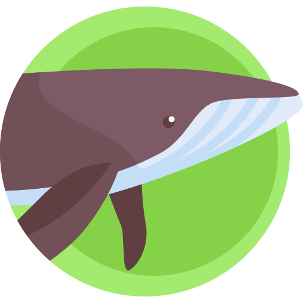

About the Ocean Life: Mammals
The oceans have a tremendous diversity of life: bacteria, plankton, invertebrates, and vertebrates, which include fish, reptiles, seabirds, and mammals. Photosynthesis and chemosynthesis create food energy in two very different ways. Plankton are tiny freely floating plants (phytoplankton) or animals (zooplankton).Marine animals breathe air or extract oxygen from the water. Some float on the surface and others dive into the ocean’s depths. There are animals that eat other animals, and plants generate food from sunlight.
Marine mammals play important ecological roles as both predator (many hunt for fish) and as prey, both for sharks and other, larger marine mammals. Humans have also long hunted marine mammals for food and fur.